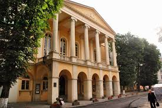
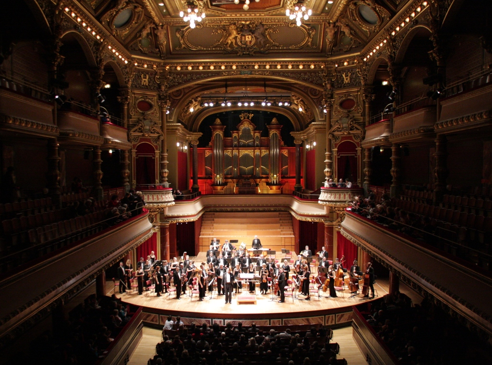
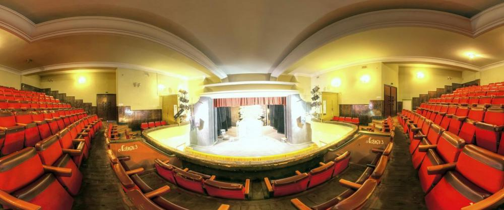
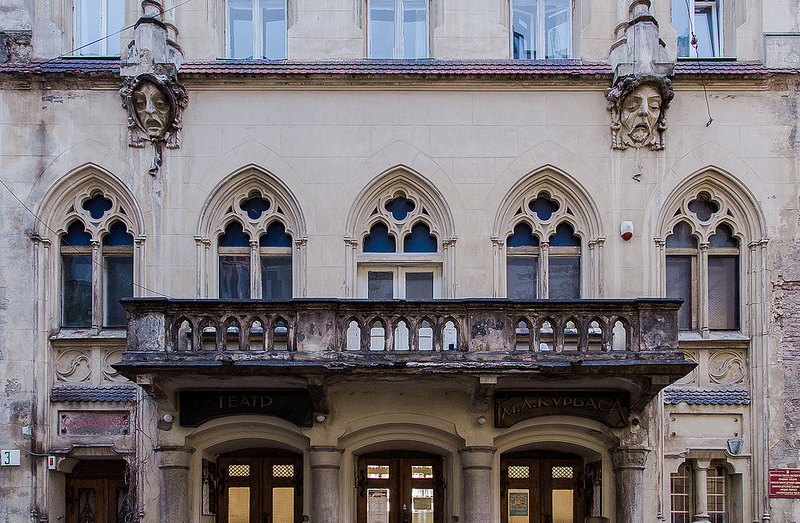
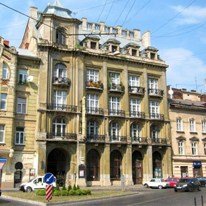
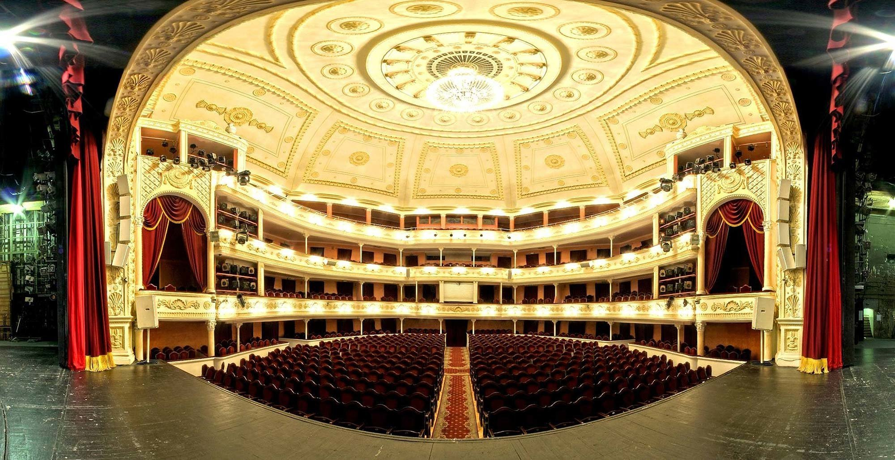

The theatre has a large creative group of performers who strive to maintain traditions of Ukrainian opera and classical ballet.
The S. Krushelnytska Opera and Ballet Theatre is a well-organized creative body where over 500 people work towards a common goal.
The repertoire includes 10 Ukrainian music compositions. It should be emphasized that no other similar theatre in Ukraine has such a large number of Ukrainian productions.
There are also many operas written by foreign composers, and most of these operas are performed in the original language: «Othello», «Aida», «La Traviata», «Nabucco», and «A Masked Ball» by G. Verdi, «Tosca», «La Bohème» and «Madame Butterfly» by G. Puccini, «Cavalleria Rusticana» by P. Mascagni, and «Pagliacci» by R. Leoncavallo (in Italian); «Carmen» by G. Bizet (in French), «The Haunted Manor» by S. Moniuszko (in Polish), and «Iolanta» (in Russian).
Maria Zankovetska Theatre (Ukrainian: Національний академічний український драматичний театр імені Марії Заньковецької, Natsionalnyi akademichnyi ukrayinskyi dramatychnyi teatr imeni Mariyi Zankovetskoyi; Polish: Teatr Skarbkowski [1]) is a drama theatre in the centre of Lviv, Ukraine, at the intersection of Lesya Ukrayinka Street and Prospekt Svobody. The building was erected in the mid 19th century and until World War I was used as a theatre stage and a session hall of the regional council.
Lviv Regional Philharmonic
Lviv Philharmonic is a concert hall, which performs symphonic, chamber, solo, jazz and other concerts. Philharmonic is a major cultural center with its long history and traditions that complements the entire culture of Ukraine. On the initiative of Directorate of Lviv Philharmonic and artists in the foyer of the Philharmonic Gallery FilArt exist, which has art and photographic exhibitions, often thematically linked to musical events taking place in the concert hall.
 First Ukrainian Theater for Children and YouthThe theater’s repertoire for children has included an adaptation of Mark Twain’s The Adventures of Tom Sawyer and Anatolii Shyian’s Kotyhoroshko (The Pea Roller) and Letiuchyi korabel’ (The Flying Ship). Its contemporary Ukrainian repertoire included Myroslav Irchan’s Rodyna shchitkariv (The Family of Brush Makers), Volodymyr Gzhytsky’s Po zori (At Dawn), and P. Lubensky’s Neskorena poltavchanka (The Undefeated Girl from Poltava). It has also staged the Russian plays Nedorosl' (The Minor) by D. Fonvizin and Revizor (The Inspector General) by Nikolai Gogol. In 1982 the director, V. Kozmenko-Delinde, staged an experimental production of William Shakespeare’s Hamlet. The theater's artistic directors have been Vasyl Kharchenko, Serhii Danchenko, and Oleksii Ripko, and the stage designers, Borys Kosariev and I. Deshko.
 Lviv Academic theatre named by Les KurbasLes Kurbas Theatre was created in 1988 by Volodumyr Kuchynskyy and a group of young actors. Since its inception Les Kurbas Theatre became one of the most prominent and progressive theaters both in Ukraine and abroad. Such performance of Les Kurbas Theatre as "Between the two forces" by Volodymyr Vynnychenko, "Blagodarnyi Erodiy" by Hryhoriy Skovoroda, "Apocrypha" by Lesya Ukrainka, "Praise of Eros" and «Silenus Alcibiadis» by Plato, "Dreams" and "Games for Faust" by Fedor Dostoevsky, "Mark Cursed or Eastern legend" by Vasyl Stus, "Waiting for Godot" by S. Beckett won numerous awards at international theater festivals. Theater was first to perform stage productions of dialogues of Plato, Hryhoriy Skovoroda, dramatic poems of Lina Kostenko and poetry of Vasyl Stus.
 Lviv Theater "Voskresinnya"Lviv spiritual theatre "Voskresinnya" was founded in 1990 by director Jaroslav Fedoryshyn and a group of young actors from different cities of Ukraine. The first theatre performances were held in the office of the chief doctor of the First Clinical Hospital (1 Rus'ka street). On September 21, 1990 the theater received the status of the theatre studio. Theatre was granted the status of the state theatre in 1993 by Lviv Regional Council. The theatre gained the commitment of public and theater critics for rather a short period of time. In 1992 International Theatre Festival "Golden Lion" was founded at a theater. Opening world drama to Ukrainian audience, whose productions were never conducted in Ukraine, theater step by step expands the theatrical world view and culture of Ukrainian audience and actor. The theatre "Voskresinnya" combines traditions of psychological theatre and looks for modern theatrical forms. At its base students of Faculty of Culture and Arts of Lviv National Ivan Franko University are training to be a drama actor. Theatre "Voskresinnya" is a member of international theater festivals (IFEA) and International European meeting (IETM).
 Municipal TheatreThe Lesya Ukrainka Lviv Drama Theatre was founded in 1931 in Kiev. It was established as the Red Army All-Ukrainian Theater. Theatre renaming depended on the name of the district. It initially had different names - Ukrainian Red Army Theatre (URAT), Ukrainian Military District Theatre (UMDT), and Kyiv Special Military District Theatre (KSMDT). In January 1954, it first performed in Lviv under the name as the Carpathian Military District Drama Theatre, becoming the first repertory military theater in Western Ukraine. Since Ukraine’s independence, the theatre worked as the Western Operational Command Theatre. In 1996, theater funding altogether ceased. Finally on January 1, 2008 the city took over support of the theatre which was renamed the Lviv Municipal Theatre. In the spring of 2009, Lyudmila Kolosovych, distinguished Artist of Ukraine, was appointed artistic director. On April 21, 2011, the Lviv City Council renamed yet again the Municipal Theatre for Lesya Ukrainka Lviv Drama Theatre.
| Lviv Theatres | Quantity of the visitors | Quantity of performances |
|---|---|---|
| Lviv Theatre of Opera and Ballet | 1 000 000 | 33 |
| Maria Zankovetska Ukrainian National Drama Theatre | 899 999 | 45 |
| Lviv Regional Philharmonic | 844 556 | 28 | First Ukrainian Theater for Children and Youth | 402 989 | 22 |
| Lviv Academic theatre named by Les Kurbas | 694 988 | 32 |
| Lviv Theater "Voskresinnya" | 402 989 | 19 |
| Municipal Theatre | 789 322 | 28 | Total | 4 134 843 | 207 |